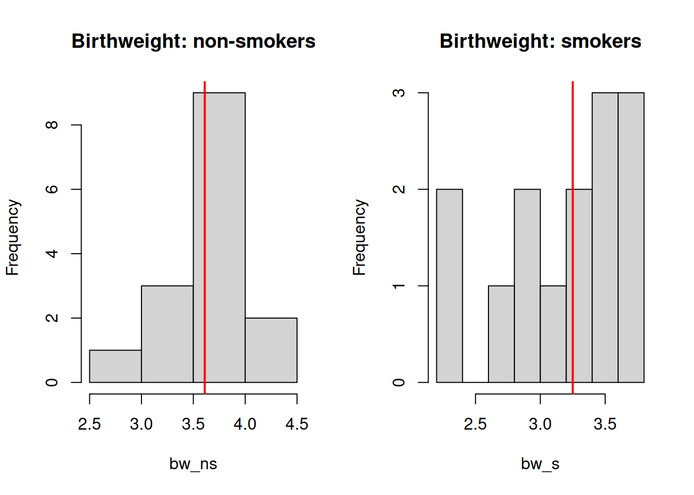

# x, y are two unpaired vectors. Do not necessary need to be of the same length.
stats::wilcox.test(x, y, paired = F)Wilcoxon Rank Sum (Mann Whitney-U) in R
Overview
Wilcoxon rank sum test, or equivalently, Mann-Whitney U-test is a rank based non-paramatric method. The aim is to examine the differences between two groups. To be more specific, it tests whether the median difference between pairs is equal to zero.
It is the non-parametric equivalent to two-sample t-test, where the two groups are not paired.
Available R package
The stats package implements various classic statistical tests, including wilcoxon rank sum test.
Example: Birth Weight
Data source: Table 30.4, Kirkwood BR. and Sterne JAC. Essentials of medical statistics. Second Edition. ISBN 978-0-86542-871-3
Comparison of birth weights (kg) of children born to 15 non-smokers with those of children born to 14 heavy smokers.
# bw_ns: non smokers
# bw_s: smokers
bw_ns <- c(3.99, 3.89, 3.6, 3.73, 3.31,
3.7, 4.08, 3.61, 3.83, 3.41,
4.13, 3.36, 3.54, 3.51, 2.71)
bw_s <- c(3.18, 2.74, 2.9, 3.27, 3.65,
3.42, 3.23, 2.86, 3.6, 3.65,
3.69, 3.53, 2.38, 2.34)Can visualize the data on two histograms. Red lines indicate the location of medians.
par(mfrow =c(1,2))
hist(bw_ns, main = 'Birthweight: non-smokers')
abline(v = median(bw_ns), col = 'red', lwd = 2)
hist(bw_s, main = 'Birthweight: smokers')
abline(v = median(bw_s), col = 'red', lwd = 2)
It is possible to see that for non-smokers, the median birthweight is higher than those of smokers. Now we can formally test it with wilcoxon rank sum test.
The default test is two-sided with confidence level of 0.95, and does continuity correction.
# default is two sided
stats::wilcox.test(bw_ns, bw_s, paired = F)Warning in wilcox.test.default(bw_ns, bw_s, paired = F): cannot compute exact
p-value with ties
Wilcoxon rank sum test with continuity correction
data: bw_ns and bw_s
W = 164.5, p-value = 0.01001
alternative hypothesis: true location shift is not equal to 0We can also carry out a one-sided test, by specifying alternative = greater (if the first item is greater than the second).
# default is two sided
stats::wilcox.test(bw_ns, bw_s, paired = F, alternative = 'greater')Warning in wilcox.test.default(bw_ns, bw_s, paired = F, alternative =
"greater"): cannot compute exact p-value with ties
Wilcoxon rank sum test with continuity correction
data: bw_ns and bw_s
W = 164.5, p-value = 0.005003
alternative hypothesis: true location shift is greater than 0